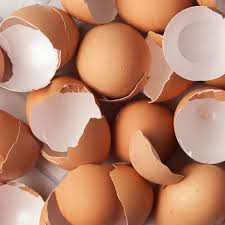
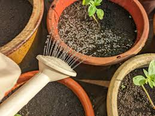

- 1.Collect your eggshells. 
- -Start by saving your eggshells after cooking or baking.Rinse them out and let them dry
- 2.Crush The Egg Shell
- -Once the egg shells are dry, crush them into small pieces using a mortar and pestle, a rolling pin or by placing them in a plastic bag and crushing them in the plastic bag using a spoon or the bottomof the cup.Make sure they are finely crushed
- 3.Add the crushed egg shells into your soil
- -Sprinkle the crushed egg shells onto the soil around your plants.you can also mix the crushed egg shells into the soil before planting
- 4.Water the soil 
- -Water the soil sfter adding the egg shells to help the nutrients in the shells breakdown and become avaolable to the plants